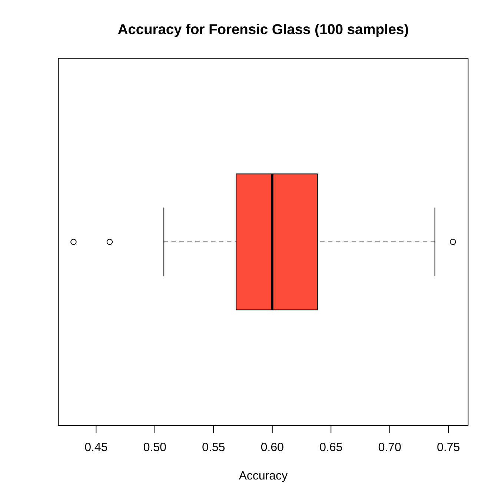

3.19 TIL20220319
3.19.1 일반선형델회귀모델
- 일반선형회귀모델
\(f(\mu \_y) = \beta\_0 + \beta\_1 x_1 + \beta\_2 x_2 + ... + \beta\_n x_n\)
- 로지스틱 선형회귀모델
\(ln( \frac{p}{1-p} ) = \beta\_0 + \beta\_1 x_1 + \beta\_2 x_2 + ... + \beta\_m x_m\)
- 포아송 선형회귀모델
\(ln(\lambda) = \beta\_0 + \beta\_1 x_1 + \beta\_2 x_2 + ... + \beta\_m x_m\)
3.19.2 이항 로지스틱 회귀분석
결과변수(종속변수)가 이분형 범주를 가질 때 예측변수(독립변수)로부터 결과변수의 범주를 예측한다.
##
## The downloaded binary packages are in
## /var/folders/24/8k48jl6d249_n_qfxwsl6xvm0000gn/T//RtmpnA657A/downloaded_packages## tibble [5,000 × 20] (S3: tbl_df/tbl/data.frame)
## $ state : Factor w/ 51 levels "AK","AL","AR",..: 17 36 32 36 37 2 20 25 19 50 ...
## $ account_length : int [1:5000] 128 107 137 84 75 118 121 147 117 141 ...
## $ area_code : Factor w/ 3 levels "area_code_408",..: 2 2 2 1 2 3 3 2 1 2 ...
## $ international_plan : Factor w/ 2 levels "no","yes": 1 1 1 2 2 2 1 2 1 2 ...
## $ voice_mail_plan : Factor w/ 2 levels "no","yes": 2 2 1 1 1 1 2 1 1 2 ...
## $ number_vmail_messages : int [1:5000] 25 26 0 0 0 0 24 0 0 37 ...
## $ total_day_minutes : num [1:5000] 265 162 243 299 167 ...
## $ total_day_calls : int [1:5000] 110 123 114 71 113 98 88 79 97 84 ...
## $ total_day_charge : num [1:5000] 45.1 27.5 41.4 50.9 28.3 ...
## $ total_eve_minutes : num [1:5000] 197.4 195.5 121.2 61.9 148.3 ...
## $ total_eve_calls : int [1:5000] 99 103 110 88 122 101 108 94 80 111 ...
## $ total_eve_charge : num [1:5000] 16.78 16.62 10.3 5.26 12.61 ...
## $ total_night_minutes : num [1:5000] 245 254 163 197 187 ...
## $ total_night_calls : int [1:5000] 91 103 104 89 121 118 118 96 90 97 ...
## $ total_night_charge : num [1:5000] 11.01 11.45 7.32 8.86 8.41 ...
## $ total_intl_minutes : num [1:5000] 10 13.7 12.2 6.6 10.1 6.3 7.5 7.1 8.7 11.2 ...
## $ total_intl_calls : int [1:5000] 3 3 5 7 3 6 7 6 4 5 ...
## $ total_intl_charge : num [1:5000] 2.7 3.7 3.29 1.78 2.73 1.7 2.03 1.92 2.35 3.02 ...
## $ number_customer_service_calls: int [1:5000] 1 1 0 2 3 0 3 0 1 0 ...
## $ churn : Factor w/ 2 levels "yes","no": 2 2 2 2 2 2 2 2 2 2 ...churn <- mlc_churn[-c(1,3)]
churn$churn <- factor(ifelse(churn$churn=="no", 1, 2),
levels=c(1,2),
labels=c("no", "yes"))
str(churn)## tibble [5,000 × 18] (S3: tbl_df/tbl/data.frame)
## $ account_length : int [1:5000] 128 107 137 84 75 118 121 147 117 141 ...
## $ international_plan : Factor w/ 2 levels "no","yes": 1 1 1 2 2 2 1 2 1 2 ...
## $ voice_mail_plan : Factor w/ 2 levels "no","yes": 2 2 1 1 1 1 2 1 1 2 ...
## $ number_vmail_messages : int [1:5000] 25 26 0 0 0 0 24 0 0 37 ...
## $ total_day_minutes : num [1:5000] 265 162 243 299 167 ...
## $ total_day_calls : int [1:5000] 110 123 114 71 113 98 88 79 97 84 ...
## $ total_day_charge : num [1:5000] 45.1 27.5 41.4 50.9 28.3 ...
## $ total_eve_minutes : num [1:5000] 197.4 195.5 121.2 61.9 148.3 ...
## $ total_eve_calls : int [1:5000] 99 103 110 88 122 101 108 94 80 111 ...
## $ total_eve_charge : num [1:5000] 16.78 16.62 10.3 5.26 12.61 ...
## $ total_night_minutes : num [1:5000] 245 254 163 197 187 ...
## $ total_night_calls : int [1:5000] 91 103 104 89 121 118 118 96 90 97 ...
## $ total_night_charge : num [1:5000] 11.01 11.45 7.32 8.86 8.41 ...
## $ total_intl_minutes : num [1:5000] 10 13.7 12.2 6.6 10.1 6.3 7.5 7.1 8.7 11.2 ...
## $ total_intl_calls : int [1:5000] 3 3 5 7 3 6 7 6 4 5 ...
## $ total_intl_charge : num [1:5000] 2.7 3.7 3.29 1.78 2.73 1.7 2.03 1.92 2.35 3.02 ...
## $ number_customer_service_calls: int [1:5000] 1 1 0 2 3 0 3 0 1 0 ...
## $ churn : Factor w/ 2 levels "no","yes": 1 1 1 1 1 1 1 1 1 1 ...churn_train <- churn[1:3333,]
churn_test <- churn[3334:5000,]
rbind(ChurnTrain = prop.table(table(churn_train$churn)),
ChurnTest = prop.table(table(churn_test$churn)))## no yes
## ChurnTrain 0.8550855 0.1449145
## ChurnTest 0.8656269 0.1343731churn_logit <- glm(churn ~ ., data = churn_train, family = binomial(link = "logit"))
summary(churn_logit)##
## Call:
## glm(formula = churn ~ ., family = binomial(link = "logit"), data = churn_train)
##
## Deviance Residuals:
## Min 1Q Median 3Q Max
## -2.1532 -0.5132 -0.3402 -0.1953 3.2528
##
## Coefficients:
## Estimate Std. Error z value Pr(>|z|)
## (Intercept) -8.6515638 0.7243142 -11.944 < 2e-16 ***
## account_length 0.0008458 0.0013912 0.608 0.543199
## international_planyes 2.0427543 0.1454974 14.040 < 2e-16 ***
## voice_mail_planyes -2.0250146 0.5740840 -3.527 0.000420 ***
## number_vmail_messages 0.0358803 0.0180108 1.992 0.046355 *
## total_day_minutes -0.2441993 3.2742224 -0.075 0.940547
## total_day_calls 0.0031962 0.0027612 1.158 0.247048
## total_day_charge 1.5127081 19.2601862 0.079 0.937398
## total_eve_minutes 0.8186945 1.6357258 0.501 0.616717
## total_eve_calls 0.0010579 0.0027826 0.380 0.703817
## total_eve_charge -9.5463678 19.2437266 -0.496 0.619840
## total_night_minutes -0.1238287 0.8764906 -0.141 0.887650
## total_night_calls 0.0006993 0.0028419 0.246 0.805628
## total_night_charge 2.8338084 19.4769043 0.145 0.884319
## total_intl_minutes -4.3377914 5.3009719 -0.818 0.413185
## total_intl_calls -0.0929680 0.0250603 -3.710 0.000207 ***
## total_intl_charge 16.3900316 19.6323938 0.835 0.403804
## number_customer_service_calls 0.5135638 0.0392678 13.079 < 2e-16 ***
## ---
## Signif. codes: 0 '***' 0.001 '**' 0.01 '*' 0.05 '.' 0.1 ' ' 1
##
## (Dispersion parameter for binomial family taken to be 1)
##
## Null deviance: 2758.3 on 3332 degrees of freedom
## Residual deviance: 2158.7 on 3315 degrees of freedom
## AIC: 2194.7
##
## Number of Fisher Scoring iterations: 6## (Intercept) account_length
## 1.748532e-04 1.000846e+00
## international_planyes voice_mail_planyes
## 7.711821e+00 1.319919e-01
## number_vmail_messages total_day_minutes
## 1.036532e+00 7.833315e-01
## total_day_calls total_day_charge
## 1.003201e+00 4.539006e+00
## total_eve_minutes total_eve_calls
## 2.267538e+00 1.001058e+00
## total_eve_charge total_night_minutes
## 7.146035e-05 8.835312e-01
## total_night_calls total_night_charge
## 1.000700e+00 1.701012e+01
## total_intl_minutes total_intl_calls
## 1.306535e-02 9.112226e-01
## total_intl_charge number_customer_service_calls
## 1.312503e+07 1.671236e+00로지스틱 회귀모델의 통계적 유의성은 summary() 함수를 통해 제공되지 않아 직접 계산을 한다. Null deviance와 Residual deviance를 통해 검정할 수 있다.
- Deviance(이탈도)
모델의 적합도 정도를 나타내는 지표, 이탈도가 적을수록 우수한 모델임
Null deviance는 상수항만을 포함하는 모델이고, Residual deviance는 모든변수를 포함하는 모델이다. 예측변수를 포함될수록 설명력은 좋아지기 때문에 이탈도는 작아질 수밖에 없다. 예측변수에 의해 작아지는 정도가 통계적으로 유의한지를 검정한다. 이탈도는 \(\chi^2\) 분포를 따르므로 \(\chi^2\) 검정 통계량을 계산해서 검정한다.
## [1] 1.731898e-116pchisq(q = (churn_logit$null.deviance - churn_logit$deviance),
df = (churn_logit$df.null - churn_logit$df.residual), lower.tail = F)## [1] 1.757917e-116churn_logit_pred <- predict(churn_logit, newdata = churn_test, type = "response")
head(churn_logit_pred)## 1 2 3 4 5 6
## 0.07236813 0.05774332 0.22650409 0.15289153 0.07078500 0.05880824churn_logit_pred <- factor(churn_logit_pred > 0.5,
levels = c(FALSE, TRUE),
labels = c("no", "yes"))
head(churn_logit_pred)## 1 2 3 4 5 6
## no no no no no no
## Levels: no yes## churn_logit_pred
## no yes
## 1595 72## Predicted
## Acutal no yes
## no 1414 29
## yes 181 43## [1] 0.8740252단계별 변수 선택을 통해 유의한 변수만 선택하만 보다 간결한 모델을 생성할 수 있다.
## Error in summary(churn_logit2): class name too long in 'summary'pchisq(q = (churn_logit2$null.deviance - churn_logit2$deviance),
df = (churn_logit2$df.null - churn_logit2$df.residual), lower.tail = F)## Error in churn_logit2$null.deviance: class name too long in '$'특정 예측변수의 변화에 따른 결과변수의 변화를 보기 위해서는 다른 변수를 고정한 후 특정 변수만 변화를 시키면서 결과를 확인할 수 있다.
##
## 0 1 2 3 4 5 6 7
## 326 605 368 236 86 30 12 4서비스센터 전화회수의 분포는 0 ~ 7번으로 구성되어 있다. 나머지 변수는 평균이나 가장 낮은 변주 유형으로 고정한 데이터셋을 생성한다.
testdata <- data.frame(
number_customer_service_calls = c(0:7),
international_plan = "no",
voice_mail_plan ="no" ,
number_vmail_messages = mean(churn_test$number_vmail_messages),
total_day_charge = mean(churn_test$total_day_charge),
total_eve_minutes = mean(churn_test$total_eve_minutes),
total_night_charge = mean(churn_test$total_night_charge),
total_intl_calls = mean(churn_test$total_intl_calls),
total_intl_charge = mean(churn_test$total_intl_charge)
); testdata## number_customer_service_calls international_plan voice_mail_plan
## 1 0 no no
## 2 1 no no
## 3 2 no no
## 4 3 no no
## 5 4 no no
## 6 5 no no
## 7 6 no no
## 8 7 no no
## number_vmail_messages total_day_charge total_eve_minutes total_night_charge
## 1 7.067786 30.82434 199.9492 8.974559
## 2 7.067786 30.82434 199.9492 8.974559
## 3 7.067786 30.82434 199.9492 8.974559
## 4 7.067786 30.82434 199.9492 8.974559
## 5 7.067786 30.82434 199.9492 8.974559
## 6 7.067786 30.82434 199.9492 8.974559
## 7 7.067786 30.82434 199.9492 8.974559
## 8 7.067786 30.82434 199.9492 8.974559
## total_intl_calls total_intl_charge
## 1 4.346731 2.784421
## 2 4.346731 2.784421
## 3 4.346731 2.784421
## 4 4.346731 2.784421
## 5 4.346731 2.784421
## 6 4.346731 2.784421
## 7 4.346731 2.784421
## 8 4.346731 2.784421## Error in predict(churn_logit2, newdata = testdata, type = "response"): class name too long in 'predict'## Error in `[.data.frame`(testdata, c(1, 10)): undefined columns selected이항 로지스틱분석은 과산포의 문제를 확인해야 한다. 결과변수의 실제 관측된 분산이 이항분포의 기대되는 분산보다 더 클 때 발생한다. 과산포는 표준오차를 왜곡시켜 회귀계수의 유의성 검정을 부정확하게 만들 위험성이 있다. 과산포 발생 시 family 인수에 quasibinomial() 함수를 적용한다.
과산포를 확인하는 방법은 이탈도와 자유도간의 비율을 살펴본다. 이탈도대 자유도의 비율이 1을 크게 상외하면 과산포를 의심한다.
## Error in deviance(churn_logit2): class name too long in 'deviance'또는 binomial()와 quasibinomial() 함수를 적용한 모델을 생성하고 통계적으로 유의성을 검정하는 방법도 있다.
fit.origin1 <- glm(churn ~ number_customer_service_calls +
international_plan +
voice_mail_plan +
number_vmail_messages +
total_day_charge +
total_eve_minutes +
total_night_charge +
total_intl_calls +
total_intl_charge, data = churn_train,
family = binomial(link = "logit"))
fit.origin2 <- glm(churn ~ number_customer_service_calls +
international_plan +
voice_mail_plan +
number_vmail_messages +
total_day_charge +
total_eve_minutes +
total_night_charge +
total_intl_calls +
total_intl_charge, data = churn_train,
family = quasibinomial(link = "logit"))
pchisq(summary(fit.origin2)$dispersion*fit.origin1$df.residual,
fit.origin1$df.residual, lower.tail = F)## [1] 0.08385493위 예제에서는 p값이 0.08385493로 유의수준 0.05에서 통계적으로 과산포의 가능성은 작다고 볼 수 있다.
3.19.3 패널티 로지스틱회귀분석
3.16 참고
당뇨평(diabetes) 여부를 예측하는 모델을 생성한다.
##
## The downloaded binary packages are in
## /var/folders/24/8k48jl6d249_n_qfxwsl6xvm0000gn/T//RtmpnA657A/downloaded_packages## 'data.frame': 768 obs. of 9 variables:
## $ pregnant: num 6 1 8 1 0 5 3 10 2 8 ...
## $ glucose : num 148 85 183 89 137 116 78 115 197 125 ...
## $ pressure: num 72 66 64 66 40 74 50 NA 70 96 ...
## $ triceps : num 35 29 NA 23 35 NA 32 NA 45 NA ...
## $ insulin : num NA NA NA 94 168 NA 88 NA 543 NA ...
## $ mass : num 33.6 26.6 23.3 28.1 43.1 25.6 31 35.3 30.5 NA ...
## $ pedigree: num 0.627 0.351 0.672 0.167 2.288 ...
## $ age : num 50 31 32 21 33 30 26 29 53 54 ...
## $ diabetes: Factor w/ 2 levels "neg","pos": 2 1 2 1 2 1 2 1 2 2 ...# 결측치 제거하는 전처리
PimaIndiansDiabetes3 <- na.omit(PimaIndiansDiabetes2)
if(!require(caret)) { install.packages("caret"); library(caret); }
set.seed(123)
train.index <- createDataPartition(y = PimaIndiansDiabetes3$diabetes,
p = 0.7, list = F)
diabetes.train <- PimaIndiansDiabetes3[train.index, ]
diabetes.test <- PimaIndiansDiabetes3[-train.index, ]
class.status <- rbind(
Train = prop.table(table(diabetes.train$diabetes)),
Test = prop.table(table(diabetes.test$diabetes))
); colnames(class.status) <- c("Negative", "Positive");
class.status## Negative Positive
## Train 0.6690909 0.3309091
## Test 0.6666667 0.3333333# 예측오차를 최소로 하는 최적의 lambda 계산
if(!require(glmnet)) { install.packages("glmnet"); library(glmnet); }
x <- model.matrix(diabetes ~ ., diabetes.train)[, -1]
y <- ifelse(diabetes.train$diabetes == "pos", 1, 0)
test.x <- model.matrix(diabetes ~ ., diabetes.test)[, -1]
test.y <- diabetes.test$diabetes
diabetes.cv <- cv.glmnet(x, y, family = "binomial", alpha = 1) # lasso 회귀모델
diabetes.lambda <- cbind(lambda.min = diabetes.cv$lambda.min, lambda.1se = diabetes.cv$lambda.1se)
rownames(diabetes.lambda) <- c("value");
diabetes.lambda## lambda.min lambda.1se
## value 0.01578334 0.05289948cbind(lambda.min = coef(diabetes.cv, diabetes.cv$lambda.min),
lambda.1se = coef(diabetes.cv, diabetes.cv$lambda.1se)
)## 9 x 2 sparse Matrix of class "dgCMatrix"
## s1 s1
## (Intercept) -8.747546342 -5.9547905277
## pregnant 0.001210910 .
## glucose 0.033473180 0.0281738015
## pressure . .
## triceps 0.025187290 0.0149718685
## insulin 0.001292712 0.0002823976
## mass 0.038416286 0.0146328065
## pedigree 1.025851783 0.3927570506
## age 0.029786375 0.0153986131예측 오차를 최소로 하는 lambda를 사용하여 모델을 생성한 후 성능을 평가한다.
diabets.gnet.min <- glmnet(x, y, family = "binomial", alpha = 1,
lambda = diabetes.cv$lambda.min)
diabets.gnet.min.pred <- predict(diabets.gnet.min, test.x, type="response")
diabets.gnet.min.pred <- ifelse(diabets.gnet.min.pred > 0.5, "pos", "neg")
table(test.y, diabets.gnet.min.pred, dnn = c("Actual", "Predicted"))## Predicted
## Actual neg pos
## neg 69 9
## pos 20 19## [1] 0.7521368간명도를 고려한 1se lambda를 사용하여 모델을 생성한 후 성능을 평가한다.
diabets.gnet.1se <- glmnet(x, y, family = "binomial", alpha = 1,
lambda = diabetes.cv$lambda.1se)
diabets.gnet.1se.pred <- predict(diabets.gnet.1se, test.x, type="response")
diabets.gnet.1se.pred <- ifelse(diabets.gnet.1se.pred > 0.5, "pos", "neg")
table(test.y, diabets.gnet.1se.pred, dnn = c("Actual", "Predicted"))## Predicted
## Actual neg pos
## neg 71 7
## pos 21 18## [1] 0.7521368모든 예측변수를 사용한 이항 로지스틱회귀모델을 생성하고 성능을 평가한다.
diabetes.logit <- glm(diabetes ~ ., data = diabetes.train,
family = binomial(link = "logit"))
diabetes.logit.pred <- predict(diabetes.logit, diabetes.test, type = "response")
diabetes.logit.pred <- ifelse(diabetes.logit.pred > 0.5, "pos", "neg")
table(diabetes.test$diabetes, diabetes.logit.pred, dnn = c("Actual", "Predicted"))## Predicted
## Actual neg pos
## neg 66 12
## pos 20 19## [1] 0.7264957최종 모델별 예측정확도는 다음과 같고 간명도 관점에서 1se lambda를 이용한 모델을 선택하는 것이 바람직 하다.
perf.stats <- rbind(
lambda.min = mean(test.y == diabets.gnet.min.pred),
lambda.1se = mean(test.y == diabets.gnet.1se.pred),
predictor.all = mean(diabetes.test$diabetes == diabetes.logit.pred)
); colnames(perf.stats) <- c("Accuracy");
perf.stats## Accuracy
## lambda.min 0.7521368
## lambda.1se 0.7606838
## predictor.all 0.72649573.19.4 다항 로지스틱회귀분석
세 개 이상의 범주를 갖는 결과변수의 사건발생확률을 예측한다.
##
## The downloaded binary packages are in
## /var/folders/24/8k48jl6d249_n_qfxwsl6xvm0000gn/T//RtmpnA657A/downloaded_packages## 'data.frame': 944 obs. of 6 variables:
## $ TVnews : int 7 1 7 4 7 3 7 1 7 0 ...
## $ PID : Factor w/ 3 levels "Democrat","Independent",..: 3 1 1 1 1 1 1 2 2 1 ...
## $ Income : num 1.5 1.5 1.5 1.5 1.5 1.5 1.5 1.5 1.5 1.5 ...
## $ Education : Factor w/ 2 levels "low","high": 1 2 2 2 2 2 2 2 2 1 ...
## $ Age : int 36 20 24 28 68 21 77 21 31 39 ...
## $ Population: int 0 190 31 83 640 110 100 31 180 2800 ...## [1] "Democrat" "Independent" "Republican"if(!require(VGAM)) { install.packages("VGAM"); library(VGAM); }
pid.mlogit <- vglm(PID ~ ., family = multinomial(), data = PID)
summary(pid.mlogit)##
## Call:
## vglm(formula = PID ~ ., family = multinomial(), data = PID)
##
## Coefficients:
## Estimate Std. Error z value Pr(>|z|)
## (Intercept):1 1.2296119 0.3031106 4.057 4.98e-05 ***
## (Intercept):2 0.1275830 0.3405777 0.375 0.70795
## TVnews:1 0.0440935 0.0321897 1.370 0.17075
## TVnews:2 0.0247123 0.0350497 0.705 0.48077
## Income:1 -0.0165464 0.0027760 -5.960 2.51e-09 ***
## Income:2 -0.0002418 0.0027864 -0.087 0.93085
## Educationhigh:1 -0.2886055 0.1759813 -1.640 0.10101
## Educationhigh:2 -0.3530642 0.1971199 -1.791 0.07328 .
## Age:1 -0.0077751 0.0052743 -1.474 0.14044
## Age:2 -0.0066722 0.0059864 -1.115 0.26503
## Population:1 0.0002592 0.0000984 2.634 0.00844 **
## Population:2 0.0002052 0.0001053 1.949 0.05135 .
## ---
## Signif. codes: 0 '***' 0.001 '**' 0.01 '*' 0.05 '.' 0.1 ' ' 1
##
## Names of linear predictors: log(mu[,1]/mu[,3]), log(mu[,2]/mu[,3])
##
## Residual deviance: 1969.38 on 1876 degrees of freedom
##
## Log-likelihood: -984.6901 on 1876 degrees of freedom
##
## Number of Fisher scoring iterations: 4
##
## No Hauck-Donner effect found in any of the estimates
##
##
## Reference group is level 3 of the responsevglm() 함수는 마지막 범주를 기준범주로 사용한다.
## (Intercept):1 (Intercept):2 TVnews:1 TVnews:2 Income:1
## 3.4199020 1.1360792 1.0450800 1.0250202 0.9835898
## Income:2 Educationhigh:1 Educationhigh:2 Age:1 Age:2
## 0.9997582 0.7493078 0.7025321 0.9922550 0.9933500
## Population:1 Population:2
## 1.0002592 1.0002052## Democrat Independent Republican
## 1 0.6247928 0.1932306 0.1819766
## 2 0.5739020 0.1817883 0.2443097
## 3 0.6109039 0.1745194 0.2145766
## 4 0.5843473 0.1772105 0.2384421
## 5 0.5839453 0.1694467 0.2466080
## 6 0.5856824 0.1794368 0.2348808교육수준에 정치 성향에 미치는 영향을 보고 위해 교육수준은 변화시키고 나머지 예측변수는 고정된 데이터셋을 생성한다.
testdata <- data.frame(
Education = c("low", "high"),
TVnews = mean(PID$TVnews),
Income = mean(PID$Income),
Age = mean(PID$Age),
Population = mean(PID$Population)
); testdata;## Education TVnews Income Age Population
## 1 low 3.727754 46.57574 47.04343 306.3814
## 2 high 3.727754 46.57574 47.04343 306.3814pid.mlogit.pred <- predict(pid.mlogit, newdata = testdata, type="response")
cbind(testdata, pid.mlogit.pred)## Education TVnews Income Age Population Democrat Independent
## 1 low 3.727754 46.57574 47.04343 306.3814 0.4169951 0.2852971
## 2 high 3.727754 46.57574 47.04343 306.3814 0.3854667 0.2472630
## Republican
## 1 0.2977078
## 2 0.3672703교육수준이 low -> higt로 변화하면 Democrat일 확률이 감소하고, Republican일 확률이 증가하는 것을 볼 수 있다. 하지만 교육수준의 변화와 상관없이 항상 Democrate으로 예측할 확률이 가장 높기 때문에 교육수준과 성치성향과의 명확한 관계가 있다고 판단하기는 어렵다. 이는 교육수준의 회귀계수가 통계적으로 유의하지 않다는 것을 의미하기도 한다.
소득수준을 기준으로 같은 분석을 진행한다.
## [1] 1.5 115.0testdata <- data.frame(
Education = rep("low", 5),
TVnews = mean(PID$TVnews),
Income = seq(20, 100, 20),
Age = mean(PID$Age),
Population = mean(PID$Population)
); testdata;## Education TVnews Income Age Population
## 1 low 3.727754 20 47.04343 306.3814
## 2 low 3.727754 40 47.04343 306.3814
## 3 low 3.727754 60 47.04343 306.3814
## 4 low 3.727754 80 47.04343 306.3814
## 5 low 3.727754 100 47.04343 306.3814pid.mlogit.pred <- predict(pid.mlogit, newdata = testdata, type="response")
cbind(testdata, pid.mlogit.pred)## Education TVnews Income Age Population Democrat Independent
## 1 low 3.727754 20 47.04343 306.3814 0.5253435 0.2330383
## 2 low 3.727754 40 47.04343 306.3814 0.4434690 0.2725630
## 3 low 3.727754 60 47.04343 306.3814 0.3645531 0.3104445
## 4 low 3.727754 80 47.04343 306.3814 0.2923033 0.3448868
## 5 low 3.727754 100 47.04343 306.3814 0.2292065 0.3747050
## Republican
## 1 0.2416182
## 2 0.2839680
## 3 0.3250024
## 4 0.3628100
## 5 0.3960885소득의 수준에 따른 정치성향이 다른 것을 알 수 있다.
## 'data.frame': 214 obs. of 10 variables:
## $ RI : num 3.01 -0.39 -1.82 -0.34 -0.58 ...
## $ Na : num 13.6 13.9 13.5 13.2 13.3 ...
## $ Mg : num 4.49 3.6 3.55 3.69 3.62 3.61 3.6 3.61 3.58 3.6 ...
## $ Al : num 1.1 1.36 1.54 1.29 1.24 1.62 1.14 1.05 1.37 1.36 ...
## $ Si : num 71.8 72.7 73 72.6 73.1 ...
## $ K : num 0.06 0.48 0.39 0.57 0.55 0.64 0.58 0.57 0.56 0.57 ...
## $ Ca : num 8.75 7.83 7.78 8.22 8.07 8.07 8.17 8.24 8.3 8.4 ...
## $ Ba : num 0 0 0 0 0 0 0 0 0 0 ...
## $ Fe : num 0 0 0 0 0 0.26 0 0 0 0.11 ...
## $ type: Factor w/ 6 levels "WinF","WinNF",..: 1 1 1 1 1 1 1 1 1 1 ...## [1] "WinF" "WinNF" "Veh" "Con" "Tabl" "Head"# 변수 값의 범위가 다양하여 표준화하는 전처리 진행
fgl.scaled <- cbind(scale(fgl[, 1:9]), fgl[10])
set.seed(123)
train <- sample(nrow(fgl), 0.7*nrow(fgl))
fgl.train <- fgl.scaled[train, ]
fgl.test <- fgl.scaled[-train, ]
rbind(Train = table(fgl.train$type), Test = table(fgl.train$type))## WinF WinNF Veh Con Tabl Head
## Train 48 54 10 11 5 21
## Test 48 54 10 11 5 21if(!require(nnet)) { install.packages("nnet"); library(nnet); }
fgl.mlogit <- multinom(type ~ ., data = fgl.train, trace = 0)
summary(fgl.mlogit)## Call:
## multinom(formula = type ~ ., data = fgl.train, trace = 0)
##
## Coefficients:
## (Intercept) RI Na Mg Al
## WinNF 9.355295e-02 -0.8953382 -4.063962 -9.048398 -0.5114149
## Veh -1.133317e+03 -8.6962954 -5.829434 -7.471188 -3.8837185
## Con -1.775676e+03 809.3073019 -1498.700239 -5267.689197 2633.0124594
## Tabl -5.707417e+03 1503.0305126 3453.631583 402.083873 4796.9312894
## Head -3.440740e+03 3973.2180820 2766.948337 -567.865018 6106.0668610
## Si K Ca Ba Fe
## WinNF -4.762664 -5.224543 -7.036873 -6.887587 0.3130040
## Veh -9.568647 -8.386972 -2.916572 -3210.962581 0.2369889
## Con 411.127579 -2096.906955 -3215.489974 3890.713665 -1142.1918831
## Tabl 2213.126389 -5318.320092 850.190517 356.705595 -4547.5583934
## Head 5085.219769 463.552740 -641.047023 4867.920523 -1662.5175407
##
## Std. Errors:
## (Intercept) RI Na Mg Al Si K
## WinNF 2.250252 1.199628 2.399749 4.300370 1.600933 2.240364 2.512023
## Veh 1.639861 2.688003 3.037652 5.870651 2.192671 3.194121 3.509944
## Con 13.950757 10.090718 4.104262 13.278437 15.332909 3.331481 62.182580
## Tabl 0.000000 0.000000 0.000000 0.000000 0.000000 0.000000 0.000000
## Head 5.158491 8.757124 2.576395 9.600709 16.273983 12.993265 45.186352
## Ca Ba Fe
## WinNF 4.440853 6.3418754 0.2713187
## Veh 5.911691 0.5773154 0.4929929
## Con 12.352283 16.6950553 7.2049922
## Tabl 0.000000 0.0000000 0.0000000
## Head 7.347112 1.8160539 3.0181253
##
## Residual Deviance: 140.2764
## AIC: 240.2764multinom() 함수는 첫 번째 범주를 기준 범주로 사용한다.
회귀계수에 대한 유의확률을 제공하지 않아 별도로 계산을 해야 한다. 회귀계수를 표준오차로 나눠서 z 값을 계산하고 이 z 값으로 유의확률을 계산한다.
z <- summary(fgl.mlogit)$coefficients/summary(fgl.mlogit)$standard.errors
p <- (1- pnorm(abs(z), 0, 1))*2
print(p, digit=3)## (Intercept) RI Na Mg Al Si K Ca Ba Fe
## WinNF 0.967 0.45546 0.0904 0.0354 0.7494 0.03352 0.0375 0.113 0.277 0.249
## Veh 0.000 0.00122 0.0550 0.2031 0.0765 0.00274 0.0169 0.622 0.000 0.631
## Con 0.000 0.00000 0.0000 0.0000 0.0000 0.00000 0.0000 0.000 0.000 0.000
## Tabl 0.000 0.00000 0.0000 0.0000 0.0000 0.00000 0.0000 0.000 0.000 0.000
## Head 0.000 0.00000 0.0000 0.0000 0.0000 0.00000 0.0000 0.000 0.000 0.000## Error in match.arg(type): 'arg' should be one of "class", "probs"## Error in h(simpleError(msg, call)): error in evaluating the argument 'x' in selecting a method for function 'head': object 'fgl.mlogit.pred' not found## Error in cbind(round(fgl.mlogit.pred, 3), fgl.test["type"]): object 'fgl.mlogit.pred' not found## Error in is.data.frame(x): object 'fgl.mlogit.pred' not found## Error in h(simpleError(msg, call)): error in evaluating the argument 'x' in selecting a method for function 'head': object 'fgl.mlogit.pred' not found## Error in table(fgl.test$type, fgl.mlogit.pred, dnn = c("Actual", "Predicted")): object 'fgl.mlogit.pred' not foundtable(fgl.test$type,
factor(fgl.mlogit.pred,
levels=levels(fgl.test$type),
labels=levels(fgl.test$type)),
dnn=c("Actual", "Predicted"))## Error in factor(fgl.mlogit.pred, levels = levels(fgl.test$type), labels = levels(fgl.test$type)): object 'fgl.mlogit.pred' not found## Error in h(simpleError(msg, call)): error in evaluating the argument 'x' in selecting a method for function 'mean': object 'fgl.mlogit.pred' not found100번의 교차 검정을 통해 보다 안정적인 예측 정확도를 계산한다.
fgl.mlogit.cv <- numeric()
for(i in 1:100) {
train <- sample(nrow(fgl), 0.7*nrow(fgl))
fgl.train <- fgl.scaled[train, ]
fgl.test <- fgl.scaled[-train, ]
fgl.mlogit <- multinom(type ~ ., data = fgl.train, trace = 0)
fgl.mlogit.pred <- predict(fgl.mlogit, fgl.test, type = "probs")
fgl.mlogit.pred <- colnames(fgl.mlogit.pred)[max.col(fgl.mlogit.pred)]
fgl.mlogit.cv[i] <- mean(fgl.test$type == fgl.mlogit.pred)
}
summary(fgl.mlogit.cv)## Min. 1st Qu. Median Mean 3rd Qu. Max.
## 0.4308 0.5692 0.6000 0.6063 0.6346 0.7538boxplot(fgl.mlogit.cv, horizontal = T, col="tomato",
xlab="Accuracy", main = "Accuracy for Forensic Glass (100 samples)")